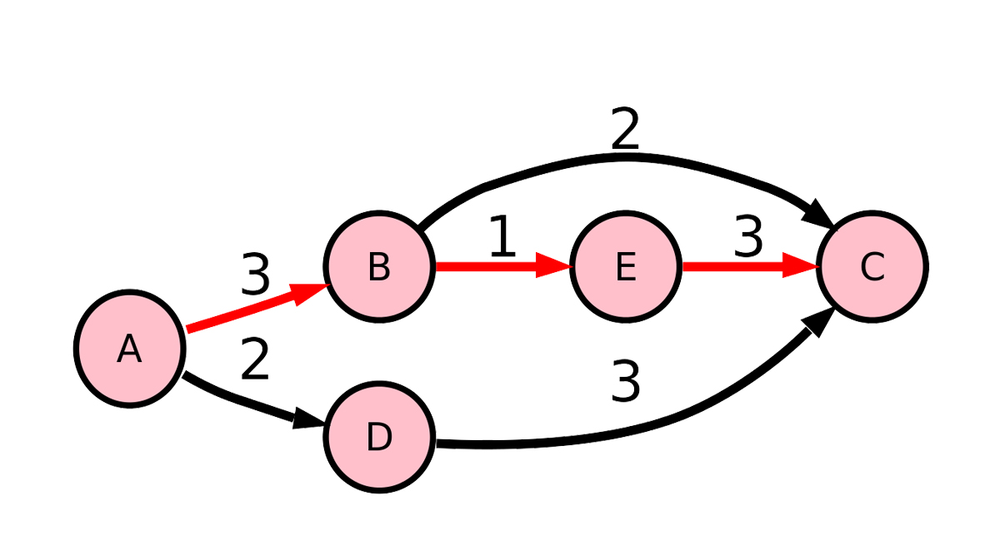
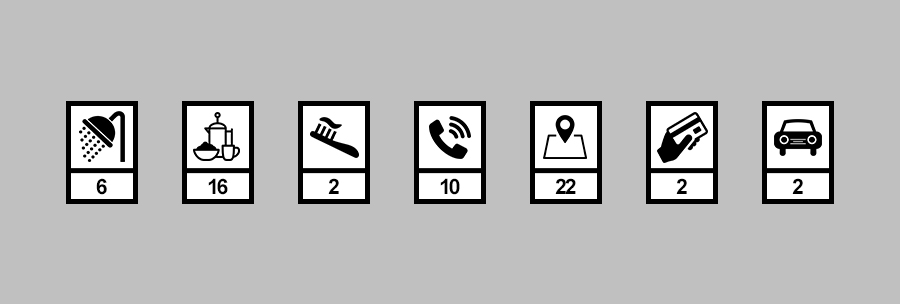
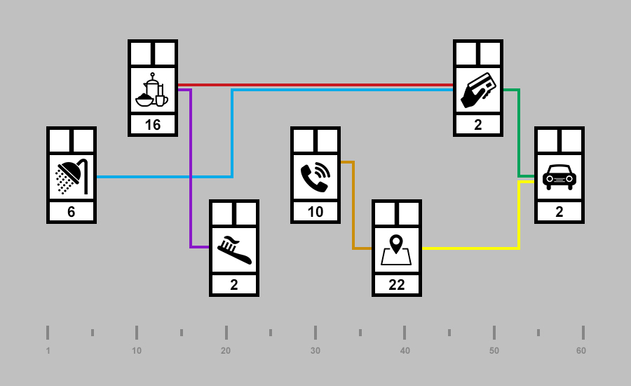
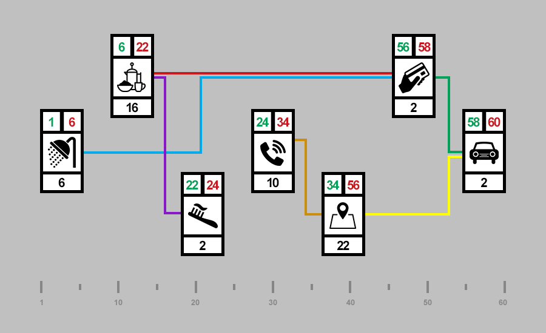
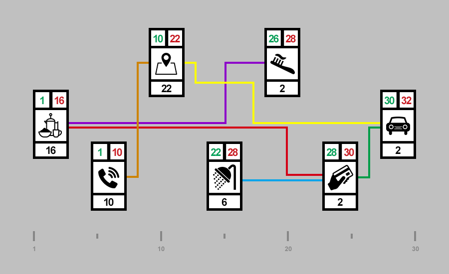

Dans la cadre d’algorithmes qui intégrent des processus et des fonctionnalités différentes, il peut être intéressant de s’interroger sur leurs interconnexions et leur enchainement afin d’optimiser leur fonctionnement. Nous allons prendre pour exemple le cas classique du voyageur de commerce en exemple pour explorer la méthode du diagramme de PERT.
Cas d’étude classique en algorithme, le voyageur de commerce - ou vendeur représentant placier a.k.a. VRP - et ses problématiques pour arriver à vendre son produit font partie d’exeption qu’aucun algorithme n’arrive à résoudre.
Nous n’allons pas tenter de le faire mais nous baser sur une partie de sa problématique en listant une suite de tâches qu’il doit réaliser chaque jour dasn le cadre de sont métier.
Pour commencer nous allons lister les étapes de façon purement subjective et arbitraire pour permettre à notre VRP de démarrer une journée parfaite :
En analysant rapidement cette liste nous pouvons constater que les tâche à faire sont plus ou moins longues et que l’enchainement des tâche suit un ordre plutôt logique pour permettre à notre VRP de commencer sa journée de façon idéale.
Il à néanmoins des contraintes de résultat, sa direction lui à fait le reproche de prendre trop de temps le matin pour se préparer et lui demande de bien vouloire accélérer le mouvement - toutes ressemblance avec un fait réél serait purement fortuite.

La méthode PERT est une méthode conventionnelle utilisable en gestion de projet, ordonnancement et planification développée aux États-Unis par la marine américaine dans les années 195_0. Un diagramme PERT représente le _planning des tâches à effectuer pour une action à réaliser et les délais nécessaires à la réalisation de chaque tâche.
Reprenons la liste de notre VRP et plaçons la dans un tableau pour y associer un temps de réalisation pour chaque tâche :
__
Nous savons à présent que notre VRP prend une heure pour se préparer mais que dans sa liste de tâche, il doit appeler sa centrale pour connaitre sa liste de clients. Le VRP n’est pas maître de ses horaires de travail mais il connait ses contraintes et le cadre dans lequel il travail.
Nous allons donc à présent lister les contrainte du VRP afin d’avoir une vision claire de son programme :
Avec toutes ces données nous pouvons à présent aider notre VRP à optimiser son temps de préparation pour être encore plus efficace grâce à la méthode PERT et au diagramme que nous pouvons réaliser. Dans un premier temps nous plaçons les tâches dans des “cartes” contenant plusieurs cases que nous allons relier entre elles.

Dans le tâches que le VRP doit réaliser nous constatons les tâches sont liées mais pas nécessairement toutes ensemble. Nous avons placer sur le schéma ci-dessus un graduiation de temps allant de 1 à 60 minutes pour nous permettre de définir deux information importantes pour nos tâches :
En plus des liaison entre les tâche nous devons à présent définir le planning de réalisation des tâches en partant du principe qu’elles sont faites les unes après les autres.

Cette représentation nous offre l’avantage de pouvoir distinguer 3 groupes de tâches dans le planning du VRP :
L’emergence de ces 3 groupes nous en apprend plus sur les possibilités d’optimisations que nous avons pour aider notre VRP à se préparer plus rapidement car nous pouvons à présent calculer le temps nécesssaire à la réalisation des tâches de chaque groupe :
Il y à très clairement le groupe 3 qui se dégage selon les informations que nous avons fait ressortir de ce schéma car il est le seul dont le départ n’est pas consécutif au paiement et qu’il à un temps d’exécution plus long.
Nous pouvons grâce aux nouvelles données que nous avons généré en analysant les tâches de notre VRP, tenter une optimisation de son planning pour lui permettre de répondre aux exigences de sa direction.

Nous proposons dans notre diagramme de regrouper les tâches non bloquantes ensemble pour que notre VRP puisse les réaliser en moins de temps sans nuire à la bonne réalisation de son but final, à savoir optimiser son temps de préparation.
Nous prenons des raccourcis dans cette présentation en considérant qu’il est possible de passer un coup de fil en prenant son petit déjeuner ou-bien qu’il est possible de se brosser les dents en même temps que prendre sa douche, ce qui dans le cadre d’un VRP est tout à fait envisageable.
La démonstration de l’utilité de la méthode PERT n’en reste pas moins réélle car si les tâches d’un algorithme peuvent être traitées en même temps de quelque manière que ce soit alors la rapidité d’exécution de l’algorithme est augmentée.
Intéressnons-nous à présent à un autre grand classique à savoir l’étude algorithmique d’une recette de cuisine, pour mettre en prespective la présentation ci-dessus de la méthode PERT. Nous allons prendre comme point de départ une recette qui à la particularité de raconter la manière dont il faut faire le plat sans donner de quantités ou de durées précises.
Contrairement à ce qu’indique son nom, cette recette est un plat classique de la gastronomie Russe qui dans sont aspect peut surprendre les amateur de potages :
" Battez trois œufs comme pour une omelette, avec sel, poivre et persil haché, un peu de parmesan râpé et une cuillerée de bonne crème, versez le tout dans une poêle à omelette, dans laquelle vous aurez fait fondre d’abord un bon morceau de beurre fin, mettez au four très chaud, et lorsque cet appareil sera cuit d’une belle couleur blonde, taillez-en des morceaux avec un coupe-pâte rond uni, mettez-les sur des croûtons de mie de pain passés au beurre et de la même grandeur que les ronds d’omelette, saupoudrez de parmesan râpé, humectez le dessus avec du beurre fondu et passez quelques minutes avant de servir au four chaud, servez-les à part sur une serviette et envoyez avec un bon consommé clarifié. "
La Gastronomie en Russie, Alphonse Petit - 2015 Collection XIX
A partir de la recette du potage Finlandais vous devez réaliser un algorithme simple permettant d’en réaliser une portion.
Pour réaliser ce travail vous devez dans un premier temps définir les critères dont vous aurez besoin pour réaliser un diagramme de PERT et un calcule de la compléxité de votre algorithme.
En terme de données pour votre algorithme vous pouvez définir pour chaque ingrédients de la recette plusieurs critères :
La contrainte principale que vous devez respecter dans votre démonstration se situe au niveau de l’exécution car la recette doit être faite le plus rapidement possible pour être servie chaude sans altérer le goût des produits qui doivent être servis au plus vite après leur cuisson.
En suivant la description de la recette du potage Finlandis ci-dessus, nous allons lister la totalités des actions à mener pour réaliser 3 portions de potages.
Nous reprennons dans un premier temps la description eten faisons une liste de tâche générales
Grâce à noytre première liste nous pouvons à présent décliner toutes les étapes de chaque tâches générales
A) Battez trois œufs comme pour une omelette, avec sel, poivre et persil haché, un peu de parmesan râpé et une cuillerée de bonne crème
B) versez le tout dans une poêle à omelette, dans laquelle vous aurez fait fondre d’abord un bon morceau de beurre fin
C) mettez au four très chaud, et lorsque cet appareil sera cuit d’une belle couleur blonde
D) taillez-en des morceaux avec un coupe-pâte rond uni, mettez-les sur des croûtons de mie de pain passés au beurre et de la même grandeur que les ronds d’omelette
E) saupoudrez de parmesan râpé
F) humectez le dessus avec du beurre fondu
G) passez quelques minutes avant de servir au four chaud
H) servez-les à part sur une serviette
I) envoyez avec un bon consommé clarifié
J) servir
Puisque toutes les tâches sont défini, nous devons associer à chacune d’elle un temps de réalisation.
Avec toutes ces données nous sommes à présent capable de réaliser un diagramme PERT afin d’évaluer la réalisation du potage. Pour ce diagramm, nous allons placer une heure de débbut et de fin pour chaque tâche générales afin de définir la durée totale de la réalisation de trois portions de potage Finlandais.
Présisualisation https://bit.ly/2RZUzBf
Nous pouvons constater sur ce diagramme que les tâches générales doivent être réalisées les unes après les autres. Cette enchainement nous permet de définir le chemin critique c’est à dire les étapes qui doivent obligatoirement ce suivre car chaque tâche précédente doit être terminée avant le débbut de la suivante.
Ce chemin critique nous apprend que la réalisation de 3 portions de potage prour nourrire une personne prend 55.4 minutes ce qui semble complètement plausible pour la réalisation d’une telle recette.
Votr erecette est un succès ! L’ambassade Russe vous demande de venir préparer pour une soirée de gala votre recette de potage Finlandais pour 500 invités de marque. Vous devez adapter votre planning de travail pour répondre aux contraintes de temps d’exécution pour un volume de production plus grand.
Pour assurer une telle commande nous allons créer une brigade de 25 cuisiniers et 25 serveurs car il est inimaginable de préparer seul un potage Finlandais pour 500 personnes. Certte brigade nous permet de repenser les tâches à réaliser car les 50 personnes en cuisine doivent travailler ensembble à la réalisation des tâches principale. Il ne faut pas risquer de perte de temps pour réaliser un tel quantité.
Présisualisation https://bit.ly/2yNdJ4D
Nous avons regroupé certaines tâches dans le but d’optimiser leur enchainement en en prenant pour principe que chacune de 50 personnes de la brigade est disponible. Nius constatons avec cette nouvelle organoisation que certaine tâches sont liées les unes aux autres ce qui indique quelles doicent être réalisées dans l’ordre.
Que le diagramme soit prévu pour une ou plusieurs personnes la problématique du chemin critique reste le même mais ça durée peut varier plus ou moins selon l’organisation de tâche.
Ce nouveau diagramme présent comme pour celui pour 3 portions, une heure de départ et une heure d’arrivée, la première constatation que nous pouvons faire et que le nouvelle organisation et propotionnelement plus rapide car le temps n’est pas multiplier par 500.
Présisualisation https://bit.ly/2J2CApK
Le diagramme présente ici deux départs et deux arrivées simultanées : une pour les 25 cuisiniers et une pour les 25 serveurs. Nous avons décidé de garder un chemin critique entre toutes les tâches des cuisinier en utilisant les serveurs pour réduire les temps de préparation et de mise en place en cuisine.
Cette méthode nous permet de gagner beaucoup de temps car certaines tâches sont réalisées en paralèlles et que nous nous appuyons sur la totaloité du personnel que nous avons à notre disposition.